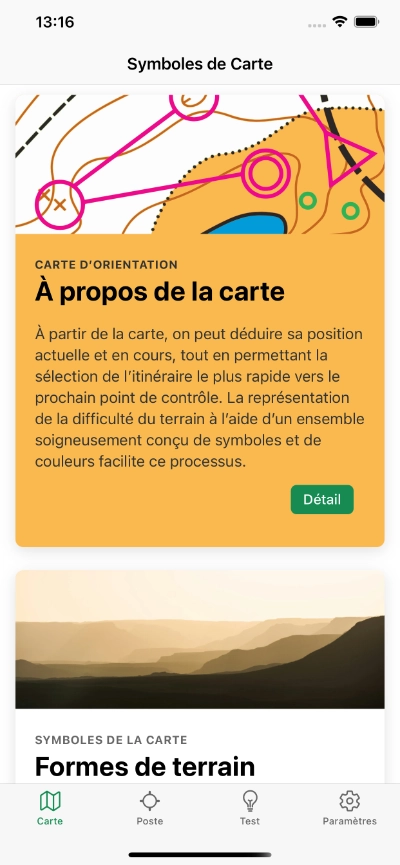
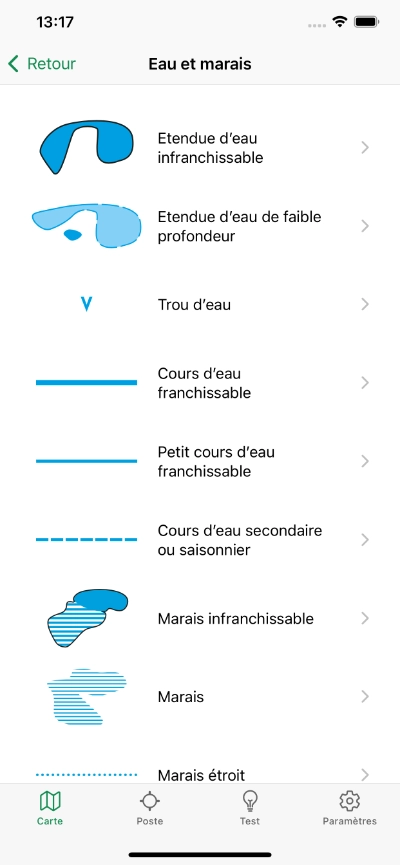
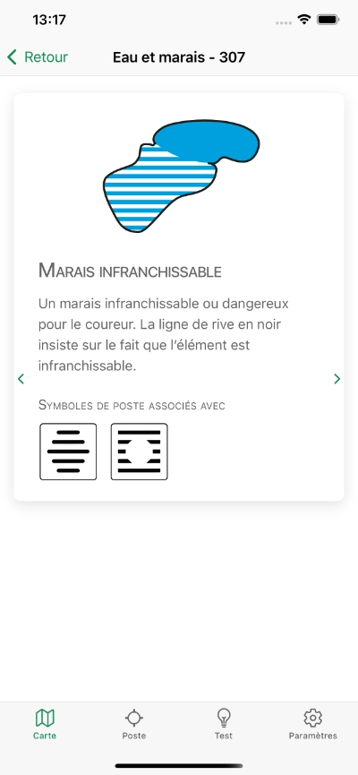
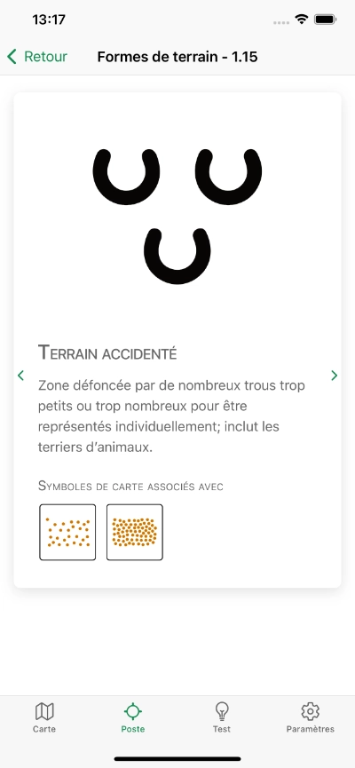
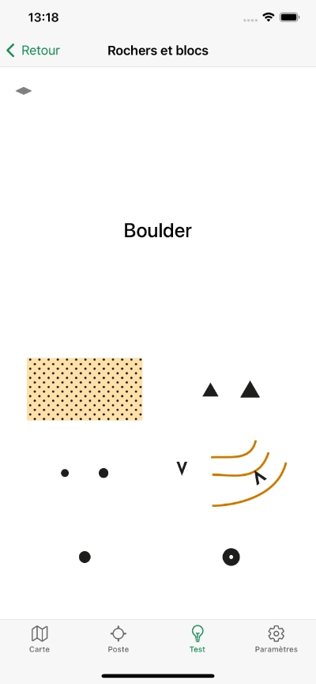
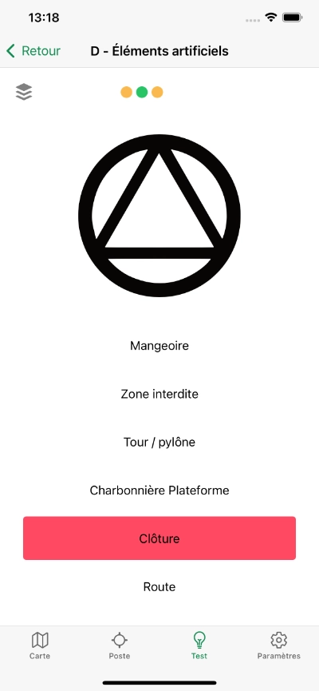
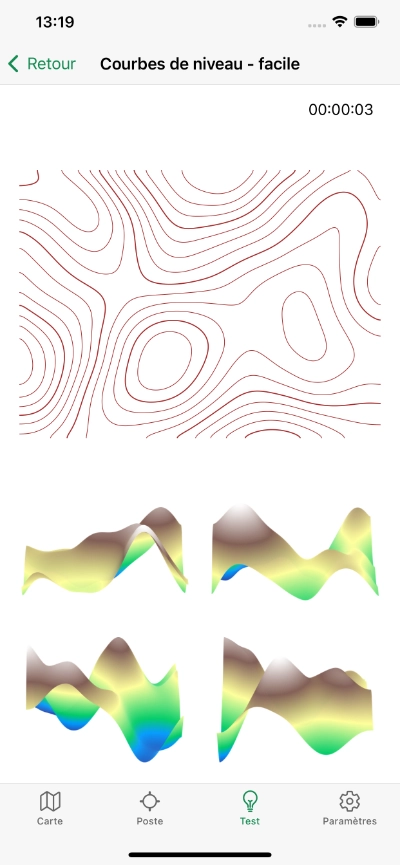

Orisym
Orientati con sicurezza
Apprendimento, test e catalogo dei simboli dell'orienteering










Perché Orisym?
- Imparerai il significato dettagliato di ogni simbolo dell'orienteering
- Testando le tue conoscenze, scoprirai il tuo livello e potrai migliorare
- Nel catalogo dei simboli cartografici e dei simboli delle lanterne, troverai le loro descrizioni dettagliate
- Scoprirai le correlazioni tra i due tipi di simboli e le loro relazioni
- Migliorerai il tuo orientamento spaziale imparando a riconoscere il terreno attraverso le curve di livello
- L'applicazione funziona offline, senza bisogno di connessione internet